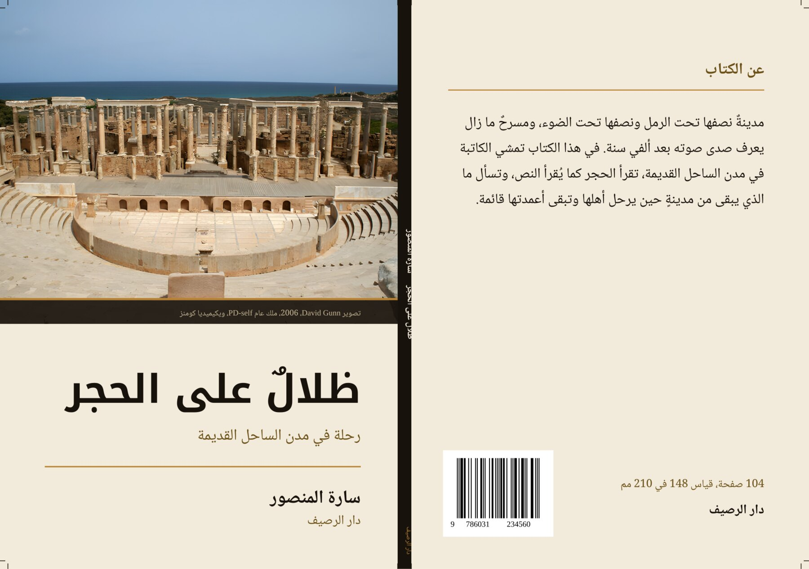
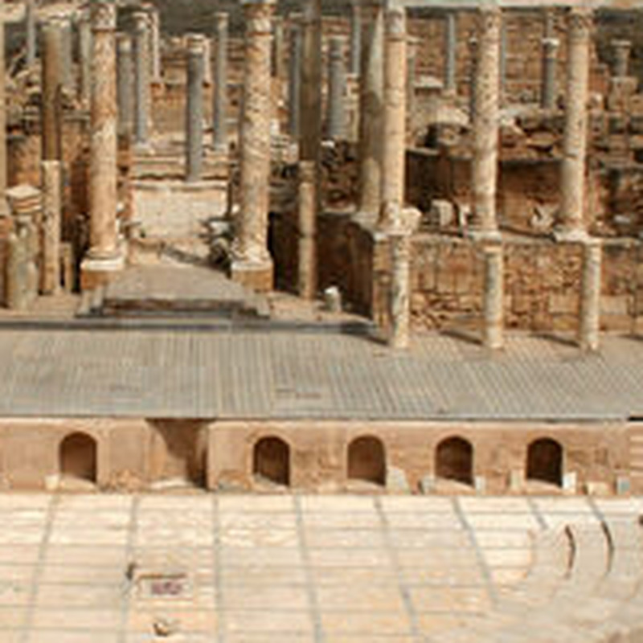
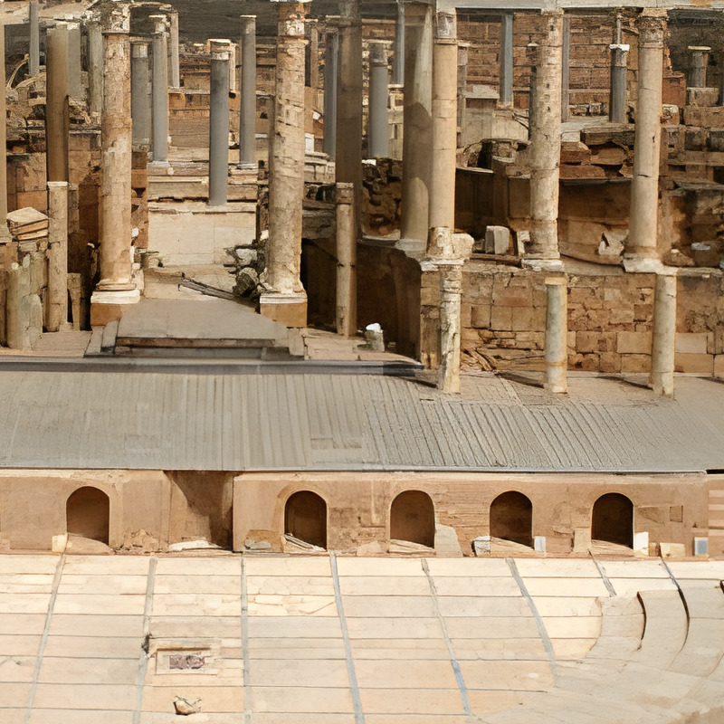

صورة الغلاف التي يرسلها الناشر غالبًا صغيرة، وتكبيرها وحده لا يصنع غلافًا صالحًا للطباعة. هذه الصفحة تمشي على السلسلة كاملة على ملف صغير فعلًا (عرضه 700 بكسل): فحص قبل التكبير، تكبير بالدقة الفائقة عند الحاجة، تركيب الوجه والظهر والكعب بالنزف وعلامات القطع، ثم تصدير PDF/X-4 بألوان CMYK. كل رقم مكتوب هنا مقيس على الملف النهائي نفسه.

وجه الغلاف مع النزف عرضه 154 مم. عند 300 نقطة في البوصة يحتاج 1819 بكسل. الملف المرسَل فيه 700 بكسل فقط، أي 115 نقطة في البوصة عند هذا العرض. الحكم: لا يكفي، ويحتاج تكبيرًا.
| القياس | القيمة |
|---|---|
| ملف العميل | 700 × 462 بكسل |
| المطلوب عند 300 نقطة/بوصة | 1819 × 1453 بكسل |
| دقته الفعلية عند عرض الوجه | 115 نقطة/بوصة |
| بعد التكبير ×4 | 2800 × 1848 بكسل |
| الدقة داخل الملف النهائي | 300 نقطة/بوصة بالضبط |
القصاصتان من الموضع نفسه في الصورة نفسها، مكبَّرتان ×4 بطريقتين. اليمين هي التي دخلت الغلاف.


التكبير لا يخترع تفاصيل غير موجودة. إن كانت الصورة الأصلية مهزوزة أو مضغوطة بشدة، أقول ذلك قبل البدء وأقترح البديل، ولا أسلِّم غلافًا أعرف أنه سيطبع رديئًا.
104 صفحة = 52 ورقة. سُمك الورقة الواحدة في ورق الكتب 80 غم تقريبًا 0.10 مم، فالكعب = 52 × 0.10 = 5.2 مم. الرقم يتغير بتغير الورق، فأطلب من المطبعة سُمك الورق الذي ستطبع به (أو وزنه ونوعه) وأعيد الحساب قبل التسليم. كعب خاطئ بمليمترين يزيح تصميم الوجه كله.
مقاس القطع الكامل 301.2 × 210 مم (148 + 5.2 + 148). مع نزف 3 مم من كل جهة يصير الفرخ 307.2 × 216 مم. صندوق القطع (TrimBox) وصندوق النزف (BleedBox) مكتوبان داخل الـ PDF، لا مرسومان فقط، فالمطبعة تقرأهما آليًا.
| ما تفحصه المطبعة | في هذا الملف |
|---|---|
| إصدار المعيار | PDF/X-4 |
| مساحة الألوان | CMYK مع ملف تعريف لوني مُضمَّن (Output Intent) |
| دقة الصورة داخل الملف | 300 نقطة/بوصة |
| الخطوط | لا خطوط مضمَّنة، كل النص مُحوَّل إلى مسارات |
| الباركود | EAN-13 بمقاس 100٪، وحدة 0.33 مم، متجهي لا صورة |
| علامات القطع | في الأركان وعند طيَّتي الكعب، داخل النزف |
النص كله مسارات، فلا يوجد خط قد يستبدله جهاز المطبعة بخط آخر. والباركود متجهي عن قصد: أول محاولة أخرجته صورة بدقة 74 نقطة/بوصة، وهذا باركود لا يُقرأ بالماسح. ملف التعريف اللوني هنا عام، وإن أعطتني المطبعة ملفها (ISO Coated v2 أو FOGRA39 أو غيره) أُضمِّن ملفها هي.
ترسل صورة الغلاف بأعلى جودة عندك، وعدد الصفحات، وورق الطباعة، ومتطلبات المطبعة إن أرسلتها لك. أرد عليك بحكم مكتوب: تكفي كما هي، أو تحتاج تكبيرًا، أو لا تصلح وهذه بدائلها.
قصاصة من صورتك أنت بحجمها الطبيعي، قبل وبعد، حتى تحكم بعينك لا بكلامي.
الوجه والظهر والكعب في فرخ واحد، بالنزف والهوامش وعلامات القطع، وبالباركود إن كان عندك رقم ISBN.
PDF/X-4 بألوان CMYK ودقة 300، ومعه صورة للمعاينة السريعة. وإن طلبت مطبعتك معيارًا آخر مثل PDF/X-1a، أصدِّره لها أيضًا.